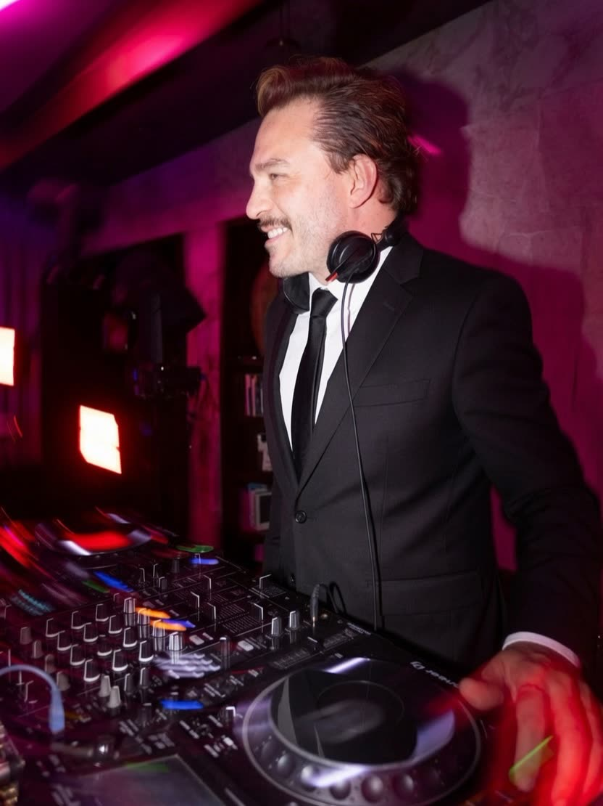
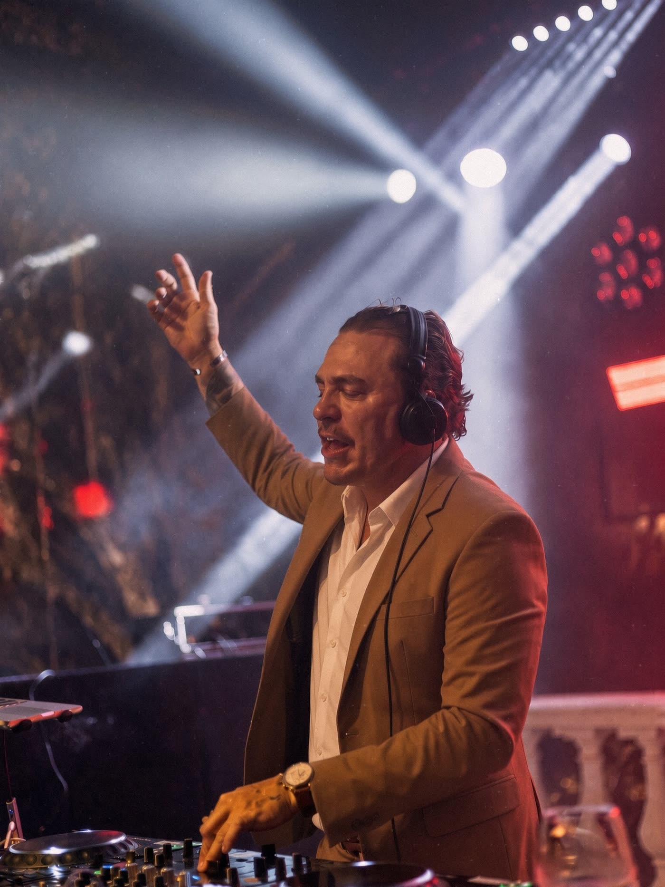
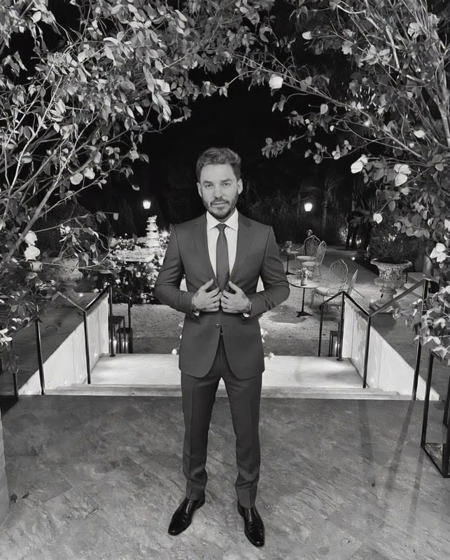
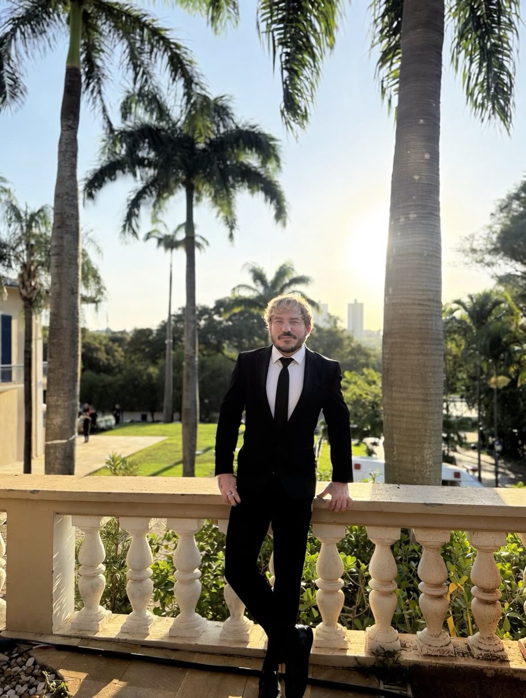
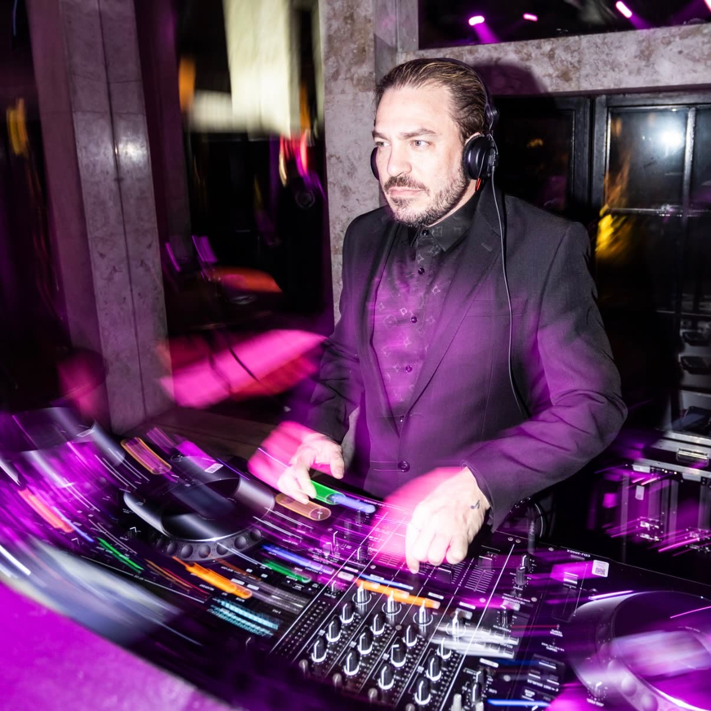
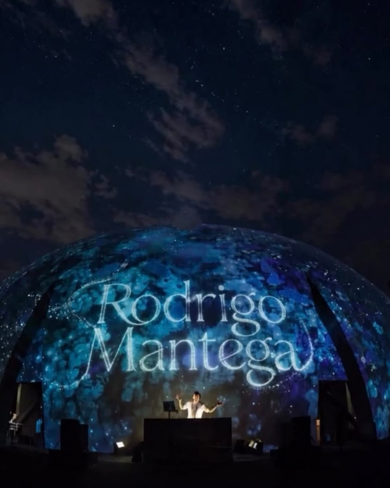
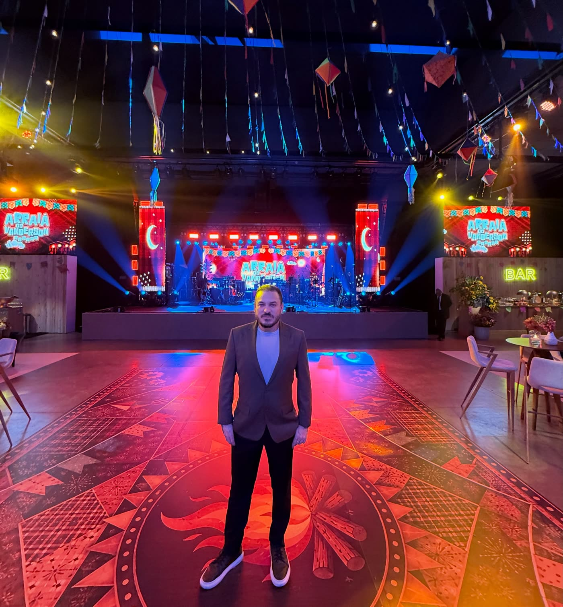
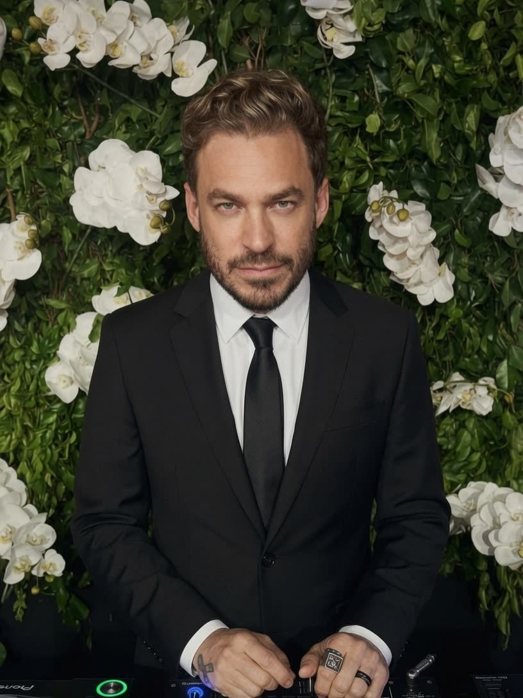

DJ de casamentos & eventos exclusivos
Estilo que se ouve.
Presença que se sente.
- 25 anos de pista
- Rock in Rio
- The Town
- Fórmula 1
- Bridal Guide Constance Zahn

sobreMim
A música nunca foi só som pra mim. Ela sempre foi sentimento, conexão, verdade. Desde pequeno eu escuto de tudo, sem preconceito, sem vaidade. Apenas sinto.
São 25 anos de carreira. Autodidata e open format, Rodrigo passou pelas pistas dos principais clubs do país e por palcos como Rock in Rio, The Town e Fórmula 1.
Hoje o foco é o que ele mais gosta de fazer: casamentos e eventos exclusivos, com repertório feito para cada festa e leitura de pista do começo ao fim.


casamentosWeddings
Cada casamento tem uma personalidade própria. O trabalho começa antes da festa, com o casal, e continua na pista: ler as pessoas e levar a energia certa da entrada até a última música.
Integrante do Bridal Guide da Constance Zahn, com casamentos em lugares como:
- Rosewood São Paulo
- Casa Niemeyer
- Yacht Club
- Fazenda Santa Bárbara
- A Quinta das Amoreiras
- Vila Siriúba, Ilhabela
Marcella & RafaA Quinta das Amoreiras · filme de João Tonsig
Luitha & Arturpré-wedding e casamento
destinationWedding
Casamentos no Brasil e fora dele, com festas bilíngues que funcionam para as duas famílias. No Yacht Club, a pista de brasileiros e americanos começou às 19h30 e só parou às 4h.
- Itália
 Estados Unidos
Estados Unidos- Argentina
- Colômbia
- Uruguai
- Rep. Dominicana
- México
- França
Brasil & Estados Unidoscasamento bilíngue

eventos eMarcas
Convenções, lançamentos e festas de empresa, com som pensado para o público e para a marca. Na agenda recente:
- BradescoCasa Charlô
- P>auá Resorts, Atibaia
- Pernod RicardClub Med Lake Paradise
- ShopeeSão Paulo
- Mind The SecTransamerica Expo Center
- ABRASRoyal Palm, Campinas

Vista da cabinepista lotada
grandesPalcos
Rock in Rio, The Town, Fórmula 1, Camarote Brahma e Champions Club do Allianz Parque. Já dividiu line-up com:
Paul McCartney · Ed Sheeran · Coldplay · John Mayer · Ariana Grande · Foo Fighters · Bon Jovi


quem contrataFala
As mensagens chegam no dia seguinte. Ative o som para ouvir.
Pista LOTADA do começo ao fim. Nunca vi uma festa acabar e estar lotada ainda!Mariana & Luiz · Fazenda Santa Bárbara
Everyone loved your set and you carried us all the way to 4 am.Andrew · noivo americano · Yacht Club
Foi demais! … Parabéns de coração.Rafa Cortez · áudio do noivo
o jeito deTocar
Se você vai me contratar apenas pelas músicas, talvez eu não seja o DJ certo pra você.
- Porque eu não entrego apenas música. Eu entrego sensação.
- Porque uma festa elegante precisa de alguém que saiba conduzir energia, não apenas tocar hits.
- Porque eu entendo que cada casamento tem uma personalidade própria.
- Porque existem momentos que precisam arrepiar. E eu vivo para criar esses momentos.
- Porque antes de me contratar como DJ, vocês precisam confiar em mim como responsável pela memória mais importante da noite.
“Like a Stone”na hora certa

produçãoMusical
Além da pista, produz remixes e música autoral, lançados nas plataformas digitais.
- My Love single · Keep Control Records
- It Ain’t Over ’Til It’s Over Lenny Kravitz · remix
- Changes Chris Lake, Laura V · remix
- Chase The Sun Planet Funk · remix
- Summer Eletro Hits sets mixados
agende a suaData
Cada proposta é feita para o seu evento: formato, horas de pista e estrutura de som. São Paulo, todo o Brasil e destination weddings.